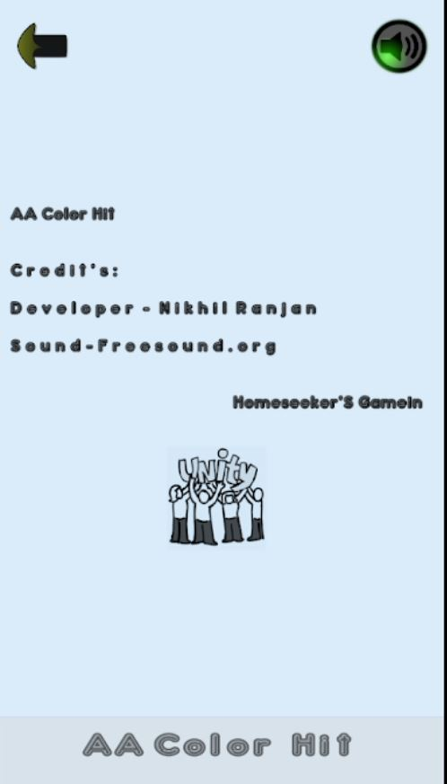
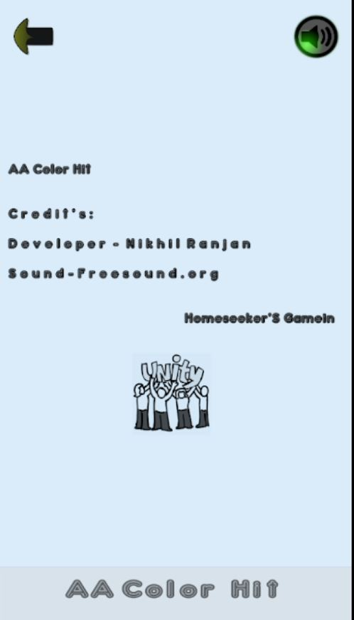

🕹️ Game Projects Showcase
Pushback Technologies, Pune
Projects developed during my tenure as a Game Developer at Pushback Technologies.
🮠Dus Ka Dum
An educational quiz game where players must answer 10 questions correctly to win. Built to make learning fun, engaging, and competitive through interactive gameplay and smart question logic.


🮠Fall Game
A tilt-control survival game — players tilt their phones to avoid falling balls and survive as long as possible! A fast-paced test of reflexes, balance, and endurance.


🮠Fat Man Survive
A humorous survival adventure where a man’s love for pizza lands him in disaster! Players must dodge obstacles, avoid temptations, and help him survive his pizza obsession.


🮠Finger Furry
A swipe-based arcade challenge where players guide a furry creature safely home through obstacle-filled levels. Features progressive difficulty, colorful environments, and intuitive controls for casual fun.


HomeseekerS-Gamein
Projects developed at HomeseekerS-Gamein using Unity Engine and AR frameworks.
🧩 AA Color Hit
A fun and challenging ragdoll physics game where two characters named A and A hang on opposite sides. Your goal is to hit the middle point accurately to save them both! Combining timing, precision, and physics — this game delivers a unique, skill-based arcade experience.


 

🉠AR Dragon Experience
An exciting Augmented Reality (AR) project where a dragon appears in the real world once a dragon image is scanned. The dragon then comes to life, moving and exploring the environment around you — blending fantasy and reality through immersive AR technology.


🧠Dus Ka Dum — Quiz Game
An educational quiz game inspired by the excitement of game shows! Players answer 10 challenging questions correctly to win the grand prize of ₹10 Crore. Designed to make learning interactive, competitive, and fun, the game combines knowledge and entertainment in a thrilling way.


🨠Memorise (Switch Color)
A memory and reflex-based puzzle game designed to test both your focus and color recall!
Each level is divided into two unique phases:
1️⃣ Switch the Ball: Match the ball to the correct color and remember it carefully.
2️⃣ Test Your Memory: In the next phase, the ball turns white — its color can’t be seen anymore! You must recall the color from the previous level and switch it correctly to progress.
Challenge your brain across multiple levels — but the real question is… can you Memorise it? 🎯
YouTube Showcase: Watch Gameplay
/1.JPG)
/2.JPG)
/3.JPG)
/4.JPG)
/5.JPG)
/6.JPG)
/7.JPG)
/8.JPG)
/9.JPG)